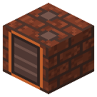
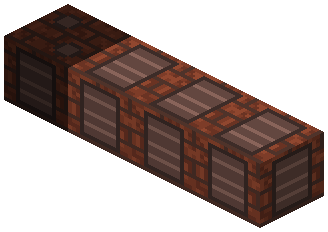
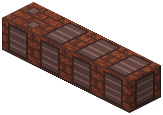
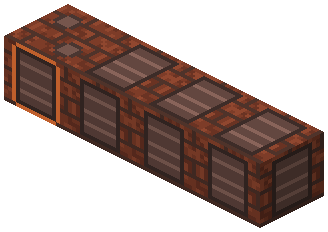

Пиролизная печь


Сухая перегонка: 64 бревна -> 64 древесного угля + 2560 mB древесного газа + 1280 mB креозота + 6400 mB жижки за 5 минут.
Сухая перегонка: 64 бревна -> 64 древесного угля + 2560 mB древесного газа + 1280 mB креозота + 6400 mB жижки за 5 минут. Секции - в ряд вбок, до 3. Растопка (не брёвна) - только на сушку первой загрузки, дальше греет свой газ; 1000 mB газа печь держит себе.
Параметры
| Эпоха | 2 — Пар и механика |
|---|---|
| Многоблок | да: секции в ряд вбок; секции |
| Привод | топка / своё |
| Баки, mB | 8000, 16000, 32000 |
| что делает | 64 бревна -> древ. уголь + древесный газ + креозот + жижка за 5 мин |
| энергия на входе | растопка на старт, дальше свой газ |
| на выходе | древесный газ (излишек наружу) |
| из чего | кирпич, печь, медные и железные листы |
Числа
| пиролизная печь: брёвен на загрузку реторты (столько же угля) | 64 шт |
|---|---|
| пиролизная печь: цикл реторты | 6000 тик |
| пиролизная печь: сушка в начале цикла (без газа) | 1200 тик |
| древесный газ с бревна | 40 mB |
| креозот с бревна (пиролиз) | 20 mB |
| жижка с бревна | 100 mB |
| пиролизная печь: газ, который бак держит себе на обогрев | 1000 mB |
Кого кормит
- creosote → Паровой автоклав, Химический реактор, Реактор высокого давления
- Жижка (древесный уксус) → Химический реактор, Реактор высокого давления
Как устроено (из кода)
Пиролизная печь - сухая перегонка дерева в железных ретортах (лесохимия, 1850-1920-е). Этот блок - головная реторта с конденсатором: загрузка брёвен, выгрузка древесного угля, топка растопки, баки газа, смолы и жижки. Секции (BlockRetortSection) - ещё реторты, вплотную в ряд вбок от неё (как коксовая батарея, общий код TileBattery). - загрузка реторты CHARGE брёвен (любой logWood), цикл TIME тиков: первая DRY - сушка (газа нет, тепло только берёт), дальше перегонка: GAS_PER_LOG mB древесного газа на бревно по ходу; в конце CHARGE древесного угля, TAR_PER_LOG креозота и LIQUOR_PER_LOG жижки (древесный уксус: вода, уксусная кислота, метанол) на бревно; - обогрев своим газом: одиночная реторта HEAT[0] (50% газа загрузки), крайняя HEAT[1] (40%), средняя HEAT[2] (30%); растопка (топливный слот, не брёвна) нужна только на сушку первой загрузки - дальше греет газ. RESERVE mB газа бак держит для себя (трубы не забирают) - на сушку следующих загрузок; излишек - в трубы (жидкостная топка), бак полон - на свечу; - энергия: уголь 160 + креозот 20 x 4.8 + газ 40 x 1 = 296 тиков < бревна 300; нетто (за обогревом) ~92-95%. Выигрыш против кучи (коксовая печь Railcraft: бревно -> уголь + 20 креозота за 90 с) - 64 бревна за 5 минут, газ и жижка. Слоты: 0 и 3 брёвна, 1 растопка, 2 и 4-6 древесный уголь, 7 зола растопки. Баки: 0 древесный газ, 1 креозот, 2 жижка (все - выход).
Сборка
Секции между двумя головными — ничьи. Разобрал секцию — её загрузка пропала.

Головная реторта лицом к себе: загрузка, выгрузка, топка, баки.

Секции вплотную в ряд вбок, вдоль лица (влево и/или вправо), до 3 — тут 3: каждая — ещё одна загрузка.


Бледное — поставлено на прошлых шагах.